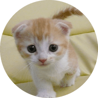

profile

小松 平馬
Heima Komatsu
1983.04.20
PR
経歴について
- 2008年4月
- 某IT受託開発専門中小企業入社。
3ヶ月程度の異なるプラットフォーム、開発環境の短期案件を並行して担当し、延べ12件以上のプロジェクトに参加。 - 2013年1月
- 2013年1月 フリーランスSEとして独立。
仕事を受託する傍ら、
「readableであり、ハードウェアリソースを有効に利用するプログラム」を追及するため日々再開発について学んでいる。
skill
スキル
- 言語
- Java, Scala, C, C++, C#, VB
- DB
- PostgreSQL, Oracle(9i,10g), MySQL(5.1,5.5), MongoDB,JavaDB, 独自DB(Java)
- framework
- Wicket, Play!,独自Java Framework
- その他
- 並列処理プログラミング,Javaチューニング,AWSでの開発/試験/運用,herokuでのサービス運用,Jenkinsでのテスト自動化,Seleniumでのテスト自動化
management
マネジメント経験
2011年10月、大規模案件にてリーダーとしてメンバー5名のマネジメントを担当。
システム全体の7割のボトルネックとなっていた機能を既存アプリケーションとのインターフェースは残し、別サーバとして分離。
サービス無停止での移行を成功させた。
担当業務
- 要件定義
- 仕様設計
- 外部設計
- 内部設計
- 実装
- 単体/連結/性能/運用テスト
参加プロジェクト概要
- 監視端末管理システム
- 音楽博物館 タッチパネル案内システム サーバ、CD制御組み込みプログラム開発
- 専用Webブラウザ 開発
- 携帯電話 基地局・端末間連携通信シミュレータ 開発
- 流通商品管理システム サーバ開発
- 環境法令Webシステム クライアント / サーバ開発
- ストリーミングデータ管理システム サーバ開発
- メニュー注文端末ポイント管理システム クライアント開発
- ネットワーク機器管理/ネットワーク機器間通信監視Webシステム クライアント / サーバ開発
- 計測情報入力支援/帳票出力ツール 開発
- 携帯キャリア基幹システムFramework開発
他多数